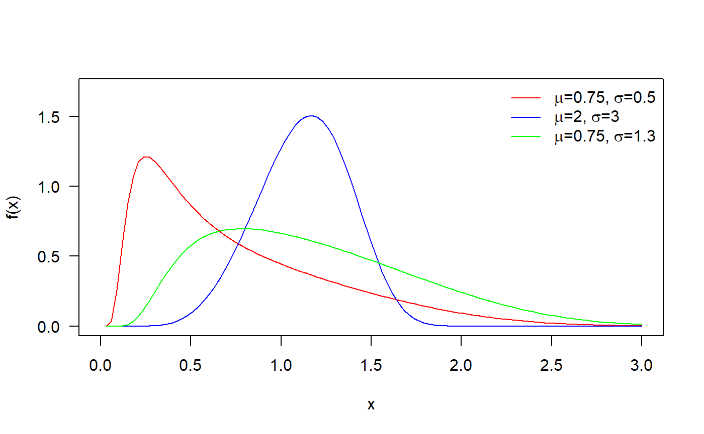
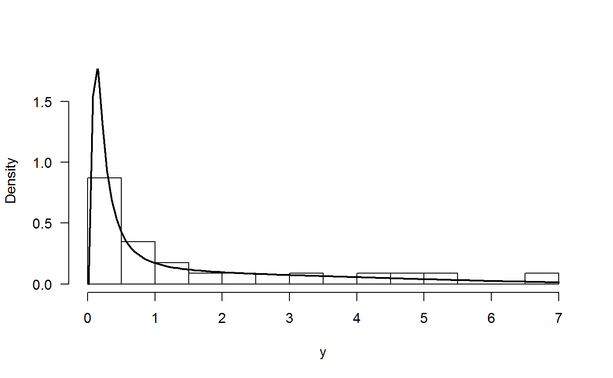
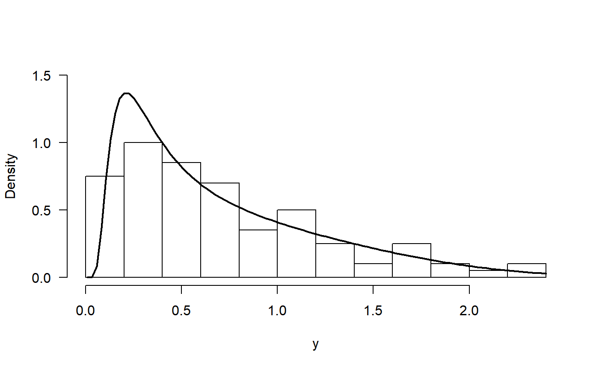

FWE distribution
Olga Usuga and Freddy Hernandez
2018-12-04
FWE_distribution.RmdFlexible Weibull extension distribution
In this vignette we explore the Flexible Weibull extension distribution. This distribution was proposed by Bebbington, Chin-Diew and Zitikis (2007).
Probability density function
\[f(x) = \left( \mu+ \frac{\sigma}{x^2} \right) e^{\mu x - \sigma / x} \exp \left( -e^{\mu x - \sigma / x} \right), \quad x > 0,\]
where \(\mu > 0\) and \(\sigma > 0\).
Next figure shows possible shapes of the pdf for several values of the parameters.


1) Estimation parameters without covariates
Example from Bebbington, Chin-Diew and Zitikis (2007) page 723
The data below correspond to the time between failures of secondary reactor pumps.
y <- c(2.160, 0.746, 0.402, 0.954, 0.491, 6.560, 4.992, 0.347,
0.150, 0.358, 0.101, 1.359, 3.465, 1.060, 0.614, 1.921,
4.082, 0.199, 0.605, 0.273, 0.070, 0.062, 5.320)To estimate the parameters for the Flexible Weibull extension distribution we use the gamlss function from gamlss package.
require(RelDists)
require(gamlss)
mod <- gamlss(y~1, sigma.fo=~1, family='FWE',
control=gamlss.control(n.cyc=5000, trace=FALSE))The results for the fitted model can be found below.
exp(coef(mod, what='mu'))
## (Intercept)
## 0.2065115
exp(coef(mod, what='sigma'))
## (Intercept)
## 0.2588857In the next figure we have the histogram for the data and the fitted density. We note that the fitted distribution explains better the observed data.
hist(y, freq=FALSE, breaks=10, ylim=c(0, 1.7), las=1, main='')
curve(dFWE(x, mu=0.21, sigma=0.26), from=0.01, add=TRUE, lwd=2)
Using simulated data
First, we simulate 100 values for the distribution using known parameters.
y <- rFWE(n=100, mu=0.75, sigma=0.5)Now we use the gamlss function from gamlss package to estimate the parameters.
mod <- gamlss(y~1, sigma.fo=~1, family='FWE',
control=gamlss.control(n.cyc=250, trace=FALSE))To obtain the fitted values for \(\mu\) and \(\sigma\) we use the inverse link function \(\log()\).
exp(coef(mod, what='mu'))
## (Intercept)
## 0.6881667
exp(coef(mod, what='sigma'))
## (Intercept)
## 0.4560117The results show that estimated parameters are close to the true parameters \(\mu\) and \(\sigma\).
In the next figure we have the histogram for the data and the fitted density. We note that the fitted density explains better the observed data.
hist(y, freq=FALSE, breaks=10, ylim=c(0, 1.5), las=1, main='')
curve(dFWE(x, mu=exp(coef(mod, what='mu')), sigma=exp(coef(mod, what='sigma'))),
from=0.01, add=TRUE, lwd=2)
2) Estimation parameters with covariates
Here we generate values from a Flexible Weibull extension distribution using the next model.
\[\begin{align*} y &\sim FWE(\mu_i, \sigma_i), \\ \log(\mu_i) &= 1.21 - 3 \times x_1, \\ \log(\sigma_i) &= 1.26 - 2 \times x_2, \\ x_1 &\sim U(0, 1), \\ x_2 &\sim U(0, 1) \end{align*}\]The code below can be used to generate \(n=200\) from the last model.
n <- 200
x1 <- runif(n)
x2 <- runif(n)
mu <- exp(1.21 - 3 * x1)
sigma <- exp(1.26 - 2 * x2)
x <- rFWE(n=n, mu, sigma)To estimate the parameters \(\mu\) and \(\sigma\) we can use the next code.
mod <- gamlss(x~x1, sigma.fo=~x2, family=FWE,
control=gamlss.control(n.cyc=5000, trace=FALSE))and the results can be found with
coef(mod, what="mu")
## (Intercept) x1
## 1.195681 -3.069315
coef(mod, what="sigma")
## (Intercept) x2
## 1.243621 -1.998578We note that the estimated parameters are close to the true parameter vector \(\boldsymbol{\theta} = (1.21, -3, 1.26, -2)^\top\).